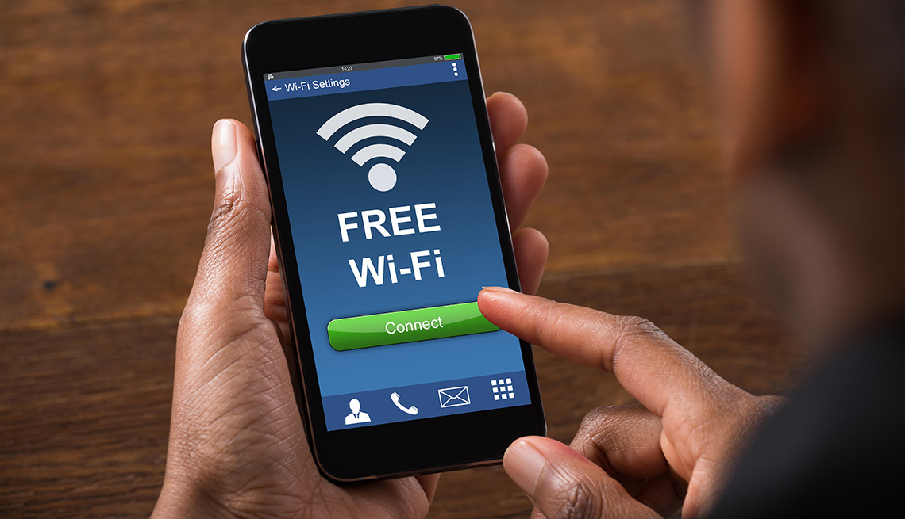
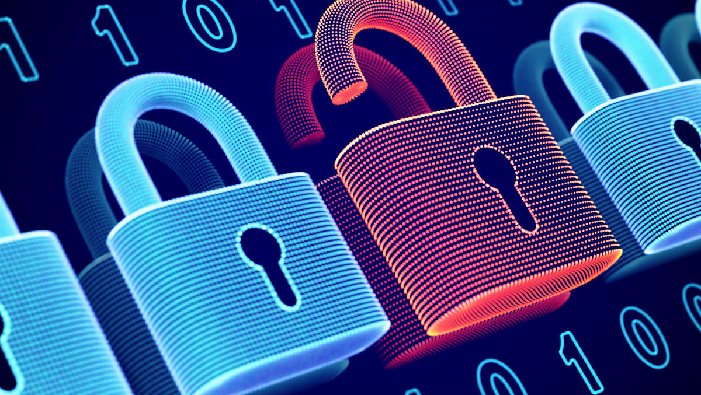
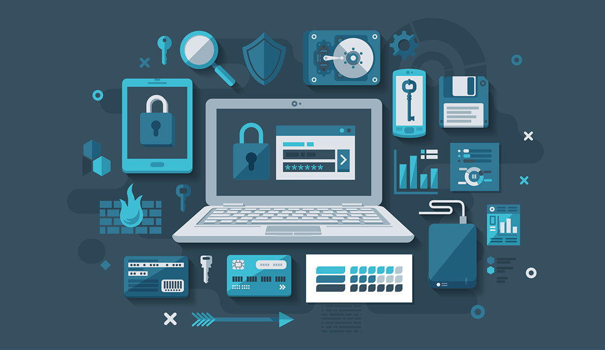
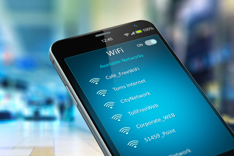
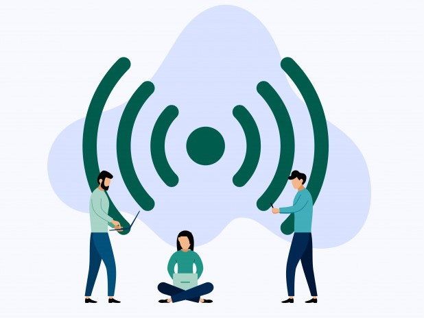

What is Public Wi-Fi?
Public Wi-Fi is free Wi-Fi that can be found and accessed in public places that will let you access the internet. Public Wi-Fi in public places can be useful but are often not secure. Personal information sent through this type of wifi can be accessed by anyone. Fortunately, there are many ways to keep private information, and other information safe while using public wifi.
How to Keep Safe Using Public Wi-Fi
Here are 8 tips to help you browse the internet safely using public Wi-Fi:
1. Use encrypted websites/encryption - The use of encryption is what will keep your personal information safe. Encryption scrambles the information you send so it is not accessible to the public. You can do this by two ways: Using an encryption website, or using a secure Wi-Fi network. Many websites will use encryption to encrypt your information. Websites with https in the start of the address will be secure and encrypted.
2. Use VPN - If you use public Wi-Fi often, you should consider using VPN. VPN or virtual private network encrypts your activities even on unsecure Wi-Fi networks. You can get VPN from many providers like ExpressVPN or NordVPN.
3. Don’t access personal information (bank accounts, passwords, sensitive personal information) - Especially on mobile apps, do not access or type in personal information. Many have found that a company’s websites are more secure than their apps. They have found that many mobile apps do not encrypt your information properly, which can lead to others seeing your information.
4. Don’t shop online - Do not shop online when on public Wi-Fi. Even though it may seem like no sensitive information is shared, when checking out and purchasing, you might need to provide personal information and/or credit card details.
5. Monitor bluetooth connections - Bluetooth connections can be very useful when connecting different devices to each other. Although this is good, if you leave your bluetooth connection on in public, hackers may use this open connection to connect their own devices to yours. So be sure to turn off bluetooth connections when going out into the public.
6. Use provided venue Wi-Fi - Don’t connect to first hotspot you see, use wifi provided by venue/turn off auto connect. Don’t assume that all Wi-Fi networks or hotspots will be secure. If these hotspots do not require WPA or WPA2 passwords, they are most likely not secure and do not encrypt your information like your home wifi does. If you use an unsecure network and access an unencrypted site, your information will most likely be in danger. Hackers will be able to access your passwords and usernames, and be able to log in as yourself. Logging in to an unencrypted website will make it very easy for others to access your information. Keep your auto connection off on your devices too. Many times, your devices will connect to networks that you might not want to use and access.
7. Turn off file sharing - Turn off your file sharing from your devices while using public networks. You may accidentally share information to others that you want private, which may end badly. To prevent this, you should turn off your file sharing ability on your device.
8. Disconnect from wifi/hotspot after you are finished - If you do not need to use the Wi-Fi/hotspot anymore, disconnect your devices from the network. This will prevent anything from happening to your devices accidentally.